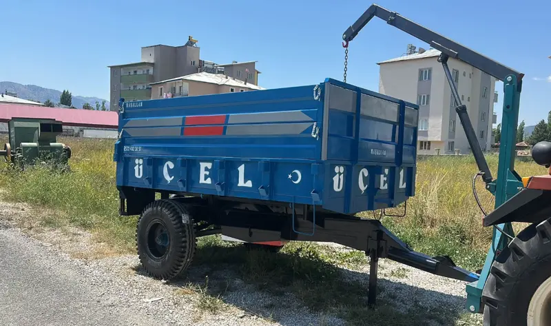
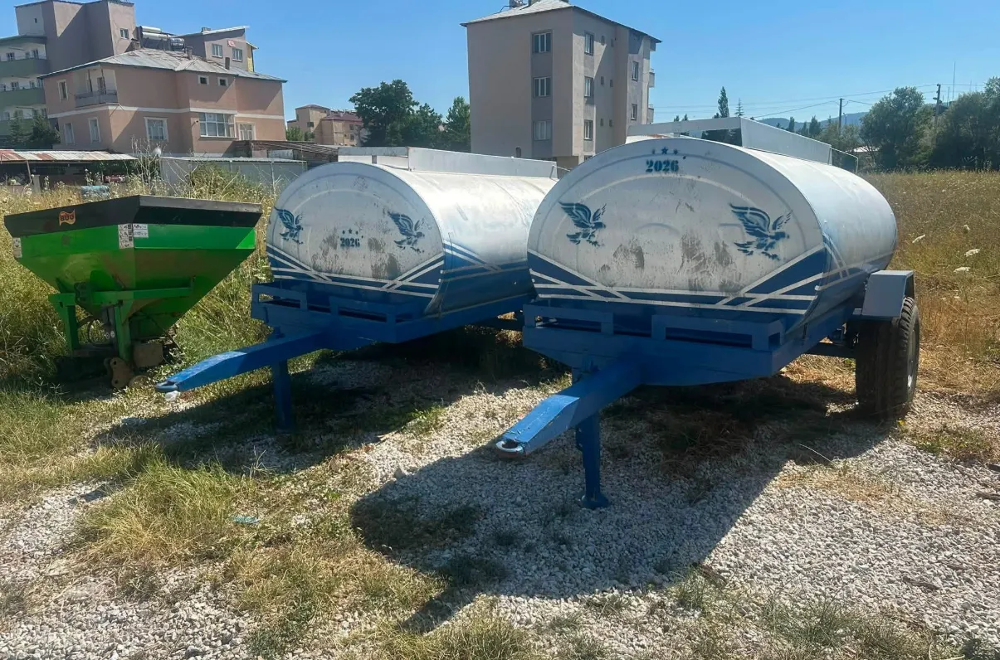

5 fotoğrafRömorklar
Tarım Römorku
Renk size özel · Kasa yazısı size özel

Su Tankerleri
Traktörle çekilir · Çeki oklu şasi
Traktörle çekilen su tankeri. Hayvan sulama, bahçe ve tarla işleri için.
Telefon: 0532 480 30 51
Emin değilseniz traktörünüzün marka ve modelini yazın, birlikte bakalım.
Traktörüme uygun mu?Ölçü ve kapasite seçeneklerini ihtiyacınıza göre birlikte belirliyoruz.
Teknik bilgi alFiyat; ölçüye, donanıma ve seçtiğiniz özelliklere göre değişiyor. Ürünü ve traktörünüzü yazın, size güncel fiyatı iletelim.
Bilgileri doldurun, WhatsApp'ta hazır mesaj olarak açılsın. Göndermeden önce değiştirebilirsiniz.
Ürün, ölçü, fiyat… Telefonla ya da WhatsApp'tan doğrudan bize ulaşın.
0532 480 30 51